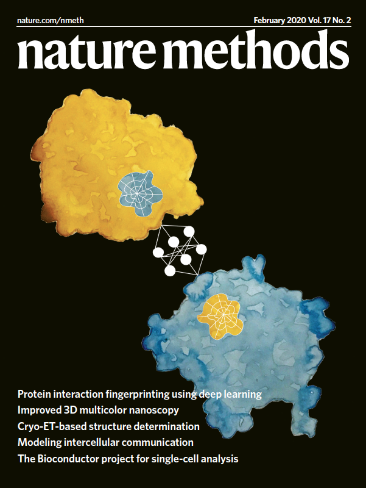
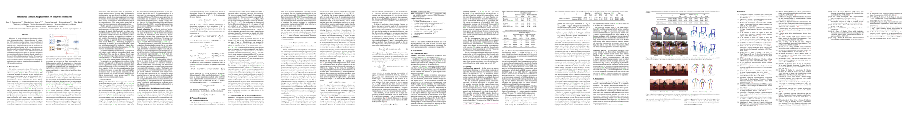
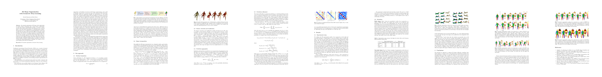

PatchMixer: Rethinking network design to boost generalization for 3D point cloud understanding
Davide Boscaini, Fabio Poiesi
Image and Vision Computing (IMAVIS), 2023
TLDR: Novel network design that is intrinsically effective in generalisation across datasets unseen at training time.
Achieves SOTA classification performance on the GraspNetPC dataset in the transfer learning setting. arxiv code

Deciphering interaction fingerprints from protein molecular surfaces using geometric deep learning
Pablo Gainza, Freyr Sverrisson, Federico Monti, Emanuele Rodolà,
Davide Boscaini, Michael M. Bronstein, Bruno E. Correia
Nature Methods, 2020
— Advertised on the February 2020 cover
Learning interaction patterns from surface representations of protein structure
Pablo Gainza, Freyr Sverrisson, Federico Monti, Emanuele Rodolà,
Davide Boscaini, Michael M. Bronstein, Bruno E. Correia
NeurIPS Workshop on Graph Representation Learning, 2019

Structured domain adaptation for 3D keypoint estimation
Levi O. Vasconcelos, Massimiliano Mancini, Davide Boscaini,
Barbara Caputo, Elisa Ricci
International Conference on 3D Vision (3DV), 2019
— Oral presentation

3D shape segmentation with geometric deep learning
Davide Boscaini, Fabio Poiesi
International Conference on Image Analysis and Processing (ICIAP), 2019
— Spotlight presentation